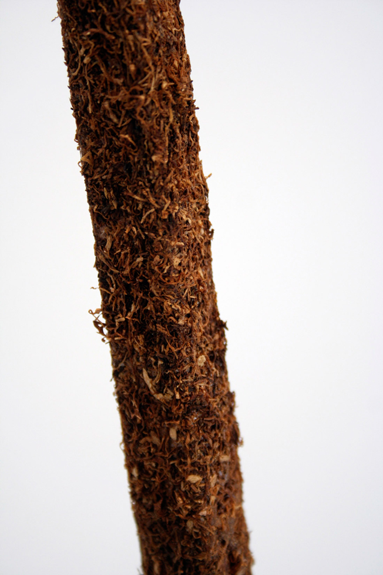
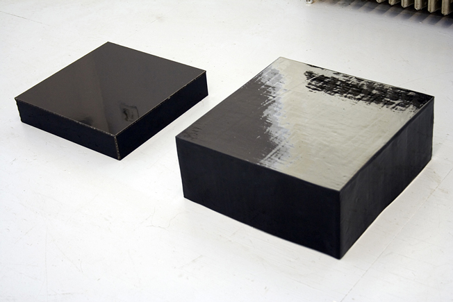
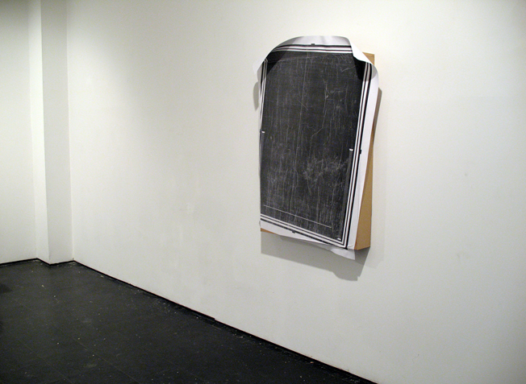
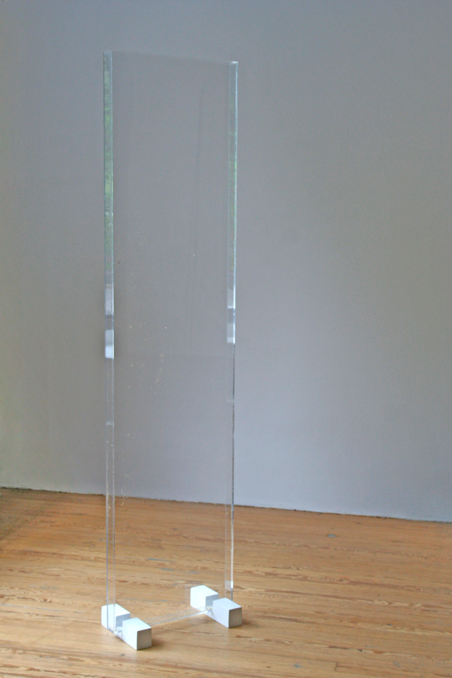

Nicki Bahrampour: II came across the Waffle piece you did for the Public Art Fund several months ago. It’s directly in front of a building who shares a very similar grid pattern. Was that intentional or did it happen by chance?
Martha Friedman: Yeah that was very intentional. One of the reasons I actually did a whole body of work about waffles was in large part because of its grid form. The grid form is something that is very modernist in a way and it’s also a form that we live by and that structures most of our physical world, the building being an obvious example of that. So having this large edible grid back dropped by a big grid that we move through, was this reversal that I liked between the waffle passing through your body and us passing through a waffle form. It was in this courtyard surrounded by a bunch of buildings so that any way you looked you were looking at a grid in front of a grid.
The park waffle is either melting or forming, which is it? That, and it's being half-eaten.
It’s sort of both. I liked it seeming like it was a melting monument or something pushing out of the batter. One of the reasons I liked this waffle body of work was because the waffle is a form that’s cast in a mold and a lot of my work in general deals with mold-making, I’ve been doing it since I was thirteen when I went to camp. It’s a very classical way of making form and the waffle is a domestic version of it that everyone understands. This transition from a liquid to a solid, and the imperfections that happen during that freezing of liquid to solid I like. So having this melting or forming waffle, between being eaten or completed, or melting is what I was going for. I’m happy that it seems malleable or in the midst of forming.
You mention your experiences in camp. Was this your first relationship with mold making?
 100 (Detail), 2010. Wood, rolling tobacco. 3/4” x 3/4” x 96”My parents sent me to this summer camp in Michigan called Interlochen, which is this famous music camp and they wanted me to play the piano and the oboe. I was playing the oboe, and I was not that good. I didn’t think I was ever going to be that good. I looked over and saw that the art kids were in this shack and I was down the road and they just seemed like they were having way more fun. So I took a sculpture class and fell in love with the guy who was teaching, he was in his mid-thirties at the time, and he taught me how to make mold. The first mold I made was of a dead tree branch, twisty and curvy. I made a plaster mold, it must have been a ten part mold, then cast it in plaster and strapped it back to the tree and from that moment on I was totally hooked.
Have you ever thought about recreating that again on a large scale or using that experience in any way to motivate some of your molds now?
 Plinth I and II 2009. Ceramic, and glass. 4″ by 15″ by 15″ / 7″ by 17″ by 17″Your melons sculpture seems to be replicating the melons natural environment. Not natural in how you’d find it growing but natural in its consumer presentation. Was it made with that in mind?
A lot of times when I pick an object or it occurs to me that I want to explore it I’ll make a mold of it and then I’ll make lots of them, I’ll replicate them. I like to make a form that references what that object does. So if it’s rubber bands they stretch, if it’s melons they stack in a pyramid, if it’s the yucca sculpture they have these finger things that can grab on to each other. I like to explore the formal properties of the thing that I’ve replicated and then also think about how you see it and how you actually come upon it. I like the first subtle shift, ‘Oh I know what that is, I recognize that, and then wait, do I recognize that?’ It’s shifting into a type of abstraction but really trying to stay on that edge between it being a very common overall form and then something a little odd. So that pyramid is a hallow pyramid and there’s one version that has an orange formica base which is the color of the inside of a cantaloupe essentially. It thwarts your understanding of how they’d be stacked. For me they become brains, they become eyeballs, they become testicles, the melons are sort of a euphemism for boobs and hopefully they scatter your understanding of the melon
 Advertisement 2009. Photocopy, wood, paper. 47” x 36”There seems to be a bit of a drop from that because with your Cucumbers piece for example, it’s not really in the state that you’d normally find them in.
At the time I was looking at a lot of still life painting. There was this one still life painting by this Spanish painter, Cotán, and it was a very simple still life of a hanging quince, and then a little lower to the right there was a hanging cabbage, then on the shelf a little lower to the right there was a cantaloupe, and then next to that was a wedge of the cantaloupe, and the very last thing that was sticking off of the shelf and essentially puncturing the picture plane of the image into the viewer’s space was this cucumber. I think that’s what set off the sculpture, was this idea of the cucumber piercing the picture plane so I decided to make these thick plexiglass planes and then the cucumber would literally push through them. So then there’s this symbiotic thing between the plexiglass and the cucumbers, where one cant stand up without the other. That’s like the melons too in that all the parts need to push together to hold itself up, that sort of engineering is always really interesting to me.
I was still interested in the idea of an absence but wanted it to be less of the surface of potentiality of a blank page and more something that had it’s own history.
You mentioned your reference to sexual organs and I noticed the phallic qualities in the ‘not simply connected’ exhibit do you want to comment on that as well?
The not simply connected show for me was more about this idea of the arc, it is a phallic form in a sense but it was more about this taurus shape, this tubular arc shape in everything, the noodles and the sausages both mimicked this taurus shape.
 blond 2010. Plexi-glass, chamomile, wood, rubber. 74” x 18” x 2”So why that shape?
It’s this reductive typography idea that every form is either a simply connected or not simply connected form. So I started thinking about what other shapes are taurus shapes that are not simply connected, so what food shapes they are. So the noodle in itself is one, and the overall shape of the sausage link piece I made mimic a taurus. The sausage piece is canted in space and it’s pinned to the floor at one point and it’s a very lightweight arc so it kind of wiggles in the space and it’s definitely super phallic, no doubt about it. I almost feel like that was not something I necessarily intended but it just happened, that happens to me a lot.
Subconscious somehow maybe?
Yeah, it’s funny how sometimes I’m really aware of it and sometimes I’m like ‘Wow, I did it again. There it is.’
I do think that this newness is real and sensed genuinely as such because it is always relative to experience.
Why did you choose this reversal of gravity or the weightlessness of that particular show in comparison to the mounds or some of the other work that you’ve done like the waffle that seem really grounded?
That’s a good question. When I made that link piece I was thinking a lot about classical modernist art work, big sculptures that are just a big arc in space, or grab the space, or own the space, that do defy gravity or physics. I thought of the link piece as, weightless is a good way of putting it, arcing out into space whereas the noodles were cascading down. I’m still interested in that, I’ve been doing these rubber band installations where I cast these oversize rubber bands and link them together and stretch them between the floor and the ceiling. So I definitely think I’m very interested in taking up space and working between our understanding of gravity and maybe a little bit of magic, the unseen of sculpture magic.
You seem to have an affinity for using rubber as a material, is there a reason for that material choice?
It goes back to the material absurdity thing, the transformation of something into rubber is totally absurd and pretty funny, I find it humorous. It’s such a funny material, it’s kind of natural, it’s kind of manmade, it really does parallel our own flesh and our own squishiness. I did this rubber egg sculpture, it was outside in this place in Queens called Socrates Sculpture park, and they were these big white eggs. I would go look at it and there were open-mouth bite marks in the rubber that were permanently inside the rubber, they were these little mouths. That people wanted to bite the rubber is very tactual, that space between object and body is really fascinating to me and rubber seems to engage that space really well. But I’ve been asking myself that a lot lately because everything I’m making right now is rubber, I’m just constantly ordering more rubber, more rubber, more rubber.
You mentioned this reflection of rubber in terms of our own physicality do you see it as a reflection of our psychology or subconscious as well?
It’s mainly just a tactile fleshy thing. In terms of a psychological standpoint, in general I’m interested in the balancing act between desire, and sex, and hunger, and fantasy, and anxiety, and collapse, and aging, and grotesque beauty. Basically this boils down to desire and anxiety and somehow rubber seems to be about those things in a way. It’s malleable, it ages but it also is very desirable there is some sort of tactile desire to want to bite it. It’s representative of this psychological conundrum that I’m interested in.
Do you think it’s partially due to its capability of creating and releasing tension?
Yes, absolutely. I think that’s absolutely right. I got really interested in the rubber when I started thinking about rubber bands, that kind of ability to pull between two points and you’re not sure if these rubber bands are functioning to collapse the space, or hold it together. The sort of stretch and release is absolutely a parallel to our own existence.
What’s been the inquisitive interest in recreating produce? Is it because it disintegrates in some way and that reflects back to some of your themes?
That’s a big reason. I seem to be drawn to food in part because food’s very understandable, it’s something that we all have a very strong, very primal relationship with. I also think there’s this strange abstract relationship that we have with food because like you said, we understand its disintegration. Really we’re eating for pleasure but we’re also eating because this thing is going to break down into its constituent chemical properties and we need that to survive. So there is an understanding that this thing is going to disintegrate and what we really need is this abstract almost invisible thing from it. I think that visually it’s endlessly compelling as well, produce, and food in general. I’m doing a series of meat sculpures right now which is similar.
I was going to ask you what you were working on next.
I’m working on this show at the Contemporary Art Museum in Detroit in September and the show’s called Rub. One of the sculptures is two very large cow tongues. I took some cow tongues I bought at a deli and enlarged them to about 45 inches from the bottom to the tip and they’re pointing at each other. Suspended between the two tips of the tongues is a pimiento of stuffed olives that is also enlarged. So there are these two big rubber tongues and a holding of stuffed olives between the tips of the tongues, that sculpture’s called Ladies Room. I’m also working on a series of big rubber plugs that sort of jam into these holes in the wall, which is an exploration of a sculpture that I made a couple of years ago. I wanted to return to that and really explore multiple plugs in different industrial colours, jamming into these holes in the wall. Kind of like the rubber bands in that you’re not sure if they’re plugging holes, or aggressively attacking the walls or just decorating the wall.
Do you notice any difference in your creative process when creating for a gallery space versus for a public space?
For the Public Art Fund piece I had to disassociate my own making from the piece because it had to withstand a year outside and people climbing on it, so it kind of got away from we in a way. I basically just turned it over to a place that would scan it, and digitally mill it out of high dense foam, and coat it in resin, and build all of this structure armature. That was a new experience, trying to make decisions that seem almost bureaucratic and distant from the process. I still feel a little strange about that sculpture in general because of that. The egg sculpture I made for Socrates I made in my studio so that felt pretty normal to me. With the public I had people climb all over the sculpture, and at Socrates having them bite it and some people cut it . That’s always interesting, how it really feels like it’s gone and out of your control and people really do act on it in a way that they can’t in a gallery, that’s always fascinating in some ways.
It seems like there are a few contemporary sculptors who are more inclined to design their work because it’s made on such a large scale that they then give their work up to someone else to create, and they sort of oversee the process. How do you feel about that kind of distant relationship to your work?
I mean I don’t have any moralistic judgements about it. People make the work they make and however they make it is theirs. People like Damien Hirst and Jeff Koons are like idea men, they oversee the process, it’s an interesting way to work but not something I’m that comfortable with personally. I mean there are definitely things that I do that I’m jobbing out, like if I have to get something scanned and then something milled and given back to me so I can put it in a mold and cast it. There are definitely parts of my process that I hire help with or use other tools for but so far I haven’t made anything that’s so big that I haven’t been able to do myself, except for the Public Art Fund piece. I’m at this limit where I make the piece just big enough, where it’s almost impossible or almost too hard, or almost technically too weird for me to do by myself. How that’s going to continue in the future I really don’t know but my experience with the Public Art Fund piece tells me it’s a whole other way of making decisions that I don’t have a lot of practice with, and something seems to feel lost to me.
All images appear courtesy the artist and Wallspace Gallery.